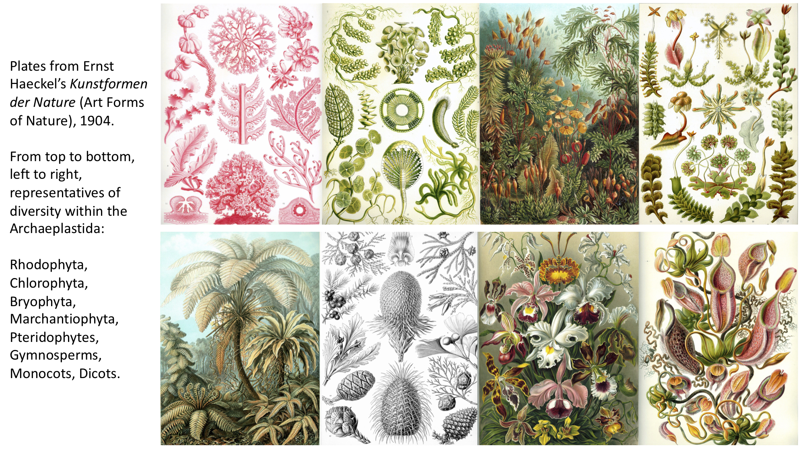

1.6 Lista de listas¶
¿Cómo crear una lista de listas?¶
Mira este video de 16:25 a 29:41
Para español, haga click en configuración, seleccione “español” debajo de los subtítulos.
Traducción por Alice Luckie (UNAM ENES León, México)
# Para reproducir el siguiente tutorial, presiona shift + enter
from IPython.display import YouTubeVideo
from datetime import timedelta
start=int(timedelta(hours=0, minutes=16, seconds=25).total_seconds())
end=int(timedelta(hours=0, minutes=29, seconds=41).total_seconds())
YouTubeVideo("4XIllJVnT4Y",start=start,end=end,width=640,height=360)
La siguiente es una transcripción del video.
💡 Recuerde: En el cuaderno anterior modificó una lista llamada
angiosperms. Vuelva a crear la lista en la celda de abajo para completar esta lección.
# Cree la lista angiosperms
wine = "Vitis"
tequila = "Agave_tequilana"
beer = "Hordeum_vulgare"
rice = "Oryza"
angiosperms = [wine, tequila, beer, rice]
Hablemos de la evolución de las plantas¶
Las plantas son esenciales para la vida humana
Las plantas nos alimentan, nos visten, nos dan cobijo, nos medican y nos inspiran
Las plantas regulan los ciclos globales del agua y el carbono
Las plantas son diversas, más diversas de las que observamos en la tierra o las que tienen flores
Las plantas están organizadas jerárquicamente, lo que refleja la historia evolutiva
Las especies se denominan con un nombre de género y de especie
Las plantas se definen por un único y antiguo evento endosimbiótico del cuál surgieron los coloroplastos.
Una visión general de la evolución de las plantas
Algas rojas y verdes (Rhodophyta y Chlorophyta)
Plantas no vasculares (briofitas: musgos, hepáticas y hornabeques)
Plantas vasculares sin semilla (Licopitas, helechos/pteridofitas, gimnospermas)
Plantas con semilla (Gimnospermas y Angiospermas)
Vamos a hacer una lista de listas sobre toda la evolución de las plantas, así que hablar un poco sobre la evolución de las plantas desde una perspectiva muy amplia. Las plantas son esenciales para vida humana. Sin duda, hoy te has comido una planta . Si no comiste una planta directamente, entonces comiste un animal y la única razón por la que el animal existe es porque en algún lugar de la cadena alimentaria una planta se comió. Las plantas nos visten, nos cobijan, nos medican, nos drogan, nos inspiran. Las plantas también regulan los ciclos globales del agua. Están tomando agua del suelo a través de sus raíces y luego a través de la acción capilar y la evaporación, en algo llamado transpiración en sus hojas, constantemente extraen agua del suelo y la liberan al aire. También asimilan constantemente carbono, dióxido de carbono, en azúcares y en períodos más largos de tiempo toman carbono y lo almacenan en el suelo a través de raíces o en escalas geológicas las plantas mueren y almacenan carbono en el suelo de esa manera.
Las plantas son diversas. Ellos son incluso más diverso, como verá en un segundo, que solo las plantas que vemos en la tierra o incluso las que florecen y están organizados jerárquicamente y esto refleja su historia evolutiva.
Y las plantas son un sologrupo y esto está definido por un solo, antiguo evento endosimbiótico que crea cloroplastos cuando una célula eucariota engulle una cianobacteria.
Entonces solo para darle una idea de cómo seve la diversidad de plantas verdaderas, recuerde que las plantas están definidas por un evento antiguo en el que una célula eucariota con núcleo engulló una bacteria fotosintética llamadas cianobacterias. Algunos de los grupos de plantas que resultaron de esto, a través de la evolución, fueron las Rhodofitas, las algas rojas, las algas verdes, la mayoría de estas viven en ambientes marinos, algunos de ellos son organismos unicelulares gigantes, por ejemplo, este grupo de plantas aquí y aquí se llaman Acetabularia y estas especies se llaman Caulerpa y tienen muchos núcleos o un solo núcleo, pero son una célula gigante. Este panel aquí es de los briófitos, los musgos, estos aquí son hepáticas, tienen estructuras aplanadas que hace hermosos patrones de ramificación, aquí están las pteridofitas, los helechos, este es un panel de gimnospermas y piñas, y luego tenemos unas hermosas flores, monocotiledóneas, y estos son un grupo específico de dicotiledóneas, las Nepenthes. Estos son de las “Formas artísticas de la naturaleza” por Ernst Haeckel’s. Solo para darte una idea delas formas de las plantas que existen.

Pero todas estas formas surgen a través de la evolución y hay un esquema completo de nomenclatura para las plantas, como verás en solo un segundo, eso es muy jerárquico, pero proviene de esta disposición de árbol de las plantas que resultan de la evolución. Y la forma en que deberías pensar en la evolución es que hay ancestros comunes y de estos ancestros comunes, que probablemente ya no existan, pero teóricamente lo hicieron alguna vez, surgieron múltiples poblaciones y estas poblaciones están cambiando a través del tiempo.
Y para que puedan ver aquí tenemos las Clorofitas y Chara, aquí están las algas verdes, la mayoría de estos son marinos, no todos, pero Chara es un alga verde de agua dulce. Luego pasamos a tierra y obtenemos los musgos, obtenemos las hepáticas, los musgos y las antocerotofitas. Lo que hay que saber sobre estos es que su etapa de vida dominante es el gametofito. Esta es una etapa haploide de la vida. Lo que significa que solo tiene una copia del genoma. Vamos más lejos y llegamos a licófitos y helechos. Aquí es donde surge un esporofito dominante, que es diploide. También puedes ver que ellos evolucionaron de forma independiente estructuras fotosintéticas aplanadasque se parecen mucho a las hojas, excepto que evolucionaron de forma independiente de las hojas, por lo que técnicamente no son hojas. Esto es muy parecido a un ala de murciélago y un ala de pájaro que son estructuras evolucionadas independientemente pero que aparecen y sirven a propósitos similares. Vamos más lejos y tenemos la evolución de las semillas. Estas semillas están desnudas, que es el origen del nombre gimnospermas, que significa semilla desnuda. Estos incluyen pinos y luego eventualmente llegas a las angiospermas, las plantas con flores donde la semilla se encierra en un ovario y hay flores.
Esta figura fue hecha por el Dr. Eugene Plavskin y muestra en qué parte de la evolución vegetal surgieron todas estas características novedosas y la relación de estos grupos de plantas de las que estaremos hablando hoy.

Entonces, crear una lista de listas es realmente fácil. Recuerde que puede completar una lista con cualquier tipo de datos o una mezcla de tipos de datos en Python y ya vimos cómo poblar una lista. Eso significa que puede crear una lista y poner un montón de cadenas y otras listas.
Por ejemplo, acabamos de hablar de todas las plantas, tienen un nombre, la plantae, y luego tenemos todos estos grupos. No hablé de los Glaucofitas. Estos son solo algunas especies que son acuáticas pero tenemos las algas rojas, las Rhodofitas, las Clorofitas las algas verdes, las carófitas, las algas verdes de agua dulce , las briofitas, los musgos, las pteridofitas, los helechos, las gimnospermas, los pinos y otras plantas con semillas desnudas, y tenemos las plantas con flores, las angiospermas.
Pero observe que con las comillas todas son cadenas, pero angiospermas es una lista, recuerda. Tiene cuatro cosas: Vitis vinifera, Agave, Hordeum, y Oryza en ella.
Entonces, creemos nuestra lista plantae, pero es una mezcla de estas cadenas y esta otra lista.
# Crear una lista de listas es fácil
# Puede completar una lista con cualquier tipo de datos
# o una mezcla de tipos de datos en Python!
# Eso significa que puedes hacer una lista con ambos
# cadenas y listas, por ejemplo
# Como ejemplo, hagamos una lista llamada plantae
# de todas las diferentes plantas que acabamos de conocer
plantae = ["glaucophytes", "rhodophytes","chlorophytes","charaophytes",
"bryophytes","pteridophytes","gymnosperms",angiosperms]
Entonces, algunos de los elementos son solo cadenas, pero las angiospermas son una lista. Entonces si imprimimos una de las cadenas, digamos el índice de posición uno, que recuerda, es la segundo posición, y luego imprimimos el índice siete que son las angiospermas, en la posición dos que es el índice uno tenemos los Rhodophytes pero en el índice siete volvemos a una lista, ¿no ?: Vitis, Agave tequilana, Hordeum y Oryza. Como lo creamos.
# Algunos de los elementos son solo cadenas
# pero las angiospermas son una lista
print(plantae[1])
print(plantae[7])
rhodophytes
['Vitis', 'Agave_tequilana', 'Hordeum_vulgare', 'Oryza']
Puede acceder, si tiene una lista dentro de una lista, puedes acceder a un elemento específico dentro de la lista de la lista. La forma en que lo haces es con un doble notación de corchetes. Entonces, el primer corchete será el número de índice de la lista. Entonces, dentro de las plantas tenemos angiospermas, pero luego el segundo paréntesis doble va a ser el segundo elemento de esa lista. Entonces tuvimos las angiospermas y luego con índice uno recuperamos el segundo elemento, que es el tequila de agave. Entonces, incluso si tienes un lista dentro de listas, puede usar corchetes dobles para usar la indexación para intentar acceder a un elementos.
# Puede acceder a un elemento dentro de una lista de una lista
# indexando primero la lista principal y luego
# el índice dentro de esa lista del elemento.
# Se utilizan corchetes dobles para hacer esto
# Si queremos acceder a "Agave_tequilana" en nuestra lista de plantae ...
plantae[7][1]
'Agave_tequilana'
Como Vitis, que Vitis vinifera se usa famoso para el vino, pero puede usar otros Vitis especies para vino también, muchos tipos de Agave, además de la tequilana, se utilizan para otras cosas como fibra o comida y tal vez necesitemos no ser tan específicos nuevamente y cambiar “Agave_tequilana” a “Agave”. Tu puedes hacer esto como lo hicimos antes pero usando los corchetes dobles. Entonces llegamos a la lista de angiospermas primero, luego indexamos el Agave y lo establecemos igual a Agave. Así que ahora, si lo imprimimos, verá que ya no tenemos “Agave_tequilana” sino solo tenemos “Agave”. Entonces, puede reasignar elementos de la lista usando la indexación como lo hicimos en una lista simple.
# Al igual que Vitis, muchos tipos de agave se utilizan con fines
# de fibra a comida, y tal vez solo queremos cambiar
# "Agave_tequilana" a "Agave"
# Podemos usar la indexación de corchetes dobles para tranquilizar
# el elemento de la lista
plantae[7][1] = "Agave"
print(plantae)
['glaucophytes', 'rhodophytes', 'chlorophytes', 'charaophytes', 'bryophytes', 'pteridophytes', 'gymnosperms', ['Vitis', 'Agave', 'Hordeum_vulgare', 'Oryza']]
Agreguemos algunas listas más modificando esto. Seamos más específicos. Crearemos una lista llamada gimnospermas. Algunos tipos de gimnospermas son coníferas, cícadas, y un grupo de plantas realmente interesante llamado Gnetofitas. Algunas de las briofitas son llamados musgos, hepáticas y hornworts. Así que shift + enter y creemos esas dos nuevas listas.
# Agreguemos dos listas más a nuestra lista de plantae
# Agreguemos algunas briofitas y gimnospermas
# Primero, crea dos listas nuevas
gymnosperms = ["conifers", "cycads", "gnetophytes"]
bryophytes = ["mosses", "liverworts", "hornworts"]
Entonces queremos reemplazar lo que son solo cadenas en este momento, ¿verdad ?, así que deberíamos mira donde están. Así que en este momento solo tenemos una cadena llamada briófitas, no una lista, y también tienen una cadena de gimnospermas, que no es una lista. Pero necesitamos reemplazarlas con nuestra lista ahora a través de modificaciones. Así que averigüemos dónde están.
Están en posiciónes cuatro y seis.
# Luego, agregue las listas a la lista de listas plantae
# Primero, ¿dónde deberíamos insertar las listas?
print(plantae)
['glaucophytes', 'rhodophytes', 'chlorophytes', 'charaophytes', 'bryophytes', 'pteridophytes', 'gymnosperms', ['Vitis', 'Agave', 'Hordeum_vulgare', 'Oryza']]
Entonces lo que hacemos, es dentro de plantae en posición seis las ponemos en la lista de gimnospermas y en la posición cuatro ponemos en la lista de briófitas.
Tenga en cuenta que estas no son cadenas. No tienen comillas y las definimos antes como listas.
Entonces, si imprimimos nuestra nueva lista de plantas, lo que obtenemos ahora es en lugar de tener briófitas como una cadena ahora tenemos una lista y en lugar de tener gimnospermas como una cadena ahora tenemos una lista también.
# ¡Luego, inserte las listas usando indexación!
plantae[6] = gymnosperms
plantae[4] = bryophytes
print(plantae)
['glaucophytes', 'rhodophytes', 'chlorophytes', 'charaophytes', ['mosses', 'liverworts', 'hornworts'], 'pteridophytes', ['conifers', 'cycads', 'gnetophytes'], ['Vitis', 'Agave', 'Hordeum_vulgare', 'Oryza']]
Y aunque esta es una lista de listas, es solo una lista porque una lista es solo un montón de tipos de datos que juntamos. Entonces, si miramos el tipo de plantae, vemos que efectivamente es una lista.
# Aunque es una lista de listas, plantae sigue siendo una lista
# Comprobemos con la función type ()
type(plantae)
list